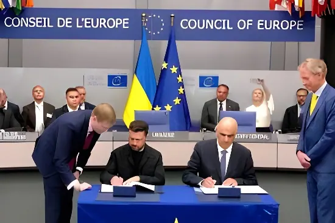

Le 15 mai 2026, lors de la réunion annuelle des ministres des Affaires étrangères du Conseil de l'Europe à Chișinău, 36 pays et l'Union européenne ont officiellement rejoint l'accord partiel élargi instituant le Comité de direction du Tribunal spécial pour le crime d'agression contre l'Ukraine. Siégeant à La Haye, cette nouvelle juridiction internationale — la première de ce type depuis les procès de Nuremberg et Tokyo — vise à combler le vide laissé par la Cour pénale internationale, incompétente en l'état pour juger ce crime spécifique dans le conflit ukrainien. Une avancée majeure, mais dont les limites, notamment face à l'immunité des dirigeants en exercice, sont déjà au cœur du débat.
La Cour pénale internationale (CPI), basée à La Haye, dispose d'une compétence reconnue pour juger les crimes de guerre, les crimes contre l'humanité et le génocide commis en Ukraine. Elle a d'ailleurs émis en 2023 un mandat d'arrêt international contre Vladimir Poutine pour déportation illégale d'enfants ukrainiens. Mais la CPI se heurte à une limite structurelle sur le crime d'agression : depuis l'amendement de Kampala (2010), elle ne peut en connaître que lorsque les deux États impliqués — agresseur et agressé — sont parties au Statut de Rome. La Russie ne l'est pas, et peut de surcroît bloquer toute saisine au Conseil de sécurité de l'ONU grâce à son droit de veto.
Cette lacune juridique a rendu indispensable la création d'un mécanisme autonome, fondé sur un traité entre États volontaires, opérant en dehors du système onusien. C'est précisément l'objet du Tribunal spécial : combler ce vide en disposant d'une compétence propre sur le crime d'agression commis contre l'Ukraine, défini comme la planification, la préparation, le déclenchement ou l'exécution par des dirigeants d'une guerre constituant une violation manifeste de la Charte des Nations unies.
L'idée d'un tribunal spécial pour l'agression russe a émergé dès les premières semaines suivant l'invasion du 24 février 2022. La piste a été portée conjointement par l'Ukraine, l'Union européenne et un groupe de juristes internationaux réunis autour du Conseil de l'Europe. Un « groupe restreint » d'experts (Core Group) d'une quarantaine d'États a travaillé pendant plus de deux ans à la rédaction des trois instruments juridiques nécessaires : l'accord bilatéral Ukraine–Conseil de l'Europe, le Statut du tribunal, et le document de gouvernance.
Le 9 mai 2025 — jour de l'Europe, choisi délibérément en contrepoint du défilé russe du 9 mai à Moscou —, la réunion ministérielle du Core Group à Lviv a officiellement entériné la création du Tribunal. Le 14 mai 2025, la demande formelle d'établissement a été présentée par la ministre ukrainienne des Affaires étrangères lors de la réunion annuelle des ministres du Conseil de l'Europe à Luxembourg. Le 25 juin 2025, l'accord bilatéral entre l'Ukraine et le Conseil de l'Europe a été signé à Strasbourg, en présence du président Zelensky. L'Ukraine a ratifié cet accord le 15 juillet 2025.
Invasion à grande échelle de l'Ukraine par la Russie. La question de la justice internationale pour le crime d'agression est immédiatement posée par Kiev et ses soutiens.
Création du Centre international chargé des poursuites pour le crime d'agression contre l'Ukraine (ICPA) à La Haye, sous l'autorité d'Eurojust. Des centaines de milliers de preuves sont rassemblées.
Dernière réunion du Core Group à Strasbourg. Les trois instruments juridiques fondateurs du Tribunal sont finalisés et soumis au niveau politique.
Réunion ministérielle du Core Group à Lviv : approbation officielle de l'établissement du Tribunal spécial. Kaja Kallas (HR/VP UE) et des ministres de plus de 40 États sont présents.
Signature de l'accord bilatéral Ukraine – Conseil de l'Europe à Strasbourg, en présence du président Zelensky. La France salue « une étape historique ».
Ratification de l'accord par le Parlement ukrainien (Verkhovna Rada). Le ministre des Affaires étrangères Sybiha qualifie ce vote de « pas décisif vers la justice ».
Le Conseil de l'Europe et l'UE signent un accord de financement pour l'Équipe préparatoire du Tribunal spécial (STAT), chargée de poser les bases institutionnelles et logistiques.
À Chișinău, 36 pays et l'UE rejoignent l'accord partiel élargi instituant le Comité de direction. Le secrétaire général Alain Berset parle d'« étape décisive ». Le ministre ukrainien des AE évoque le « point de non-retour ».
La réunion des ministres des Affaires étrangères du Conseil de l'Europe à Chișinău, le 15 mai 2026, a constitué le tournant opérationnel du projet. Les 46 États membres de l'organisation ont réaffirmé leur soutien à l'Ukraine. Parmi eux, 36 pays — principalement européens — ainsi que l'Union européenne, l'Australie et le Costa Rica ont déclaré leur intention d'adhérer à l'accord partiel élargi établissant le Comité de direction du Tribunal. Ce Comité sera l'organe de gouvernance chargé de superviser l'élection des juges et du procureur, d'élaborer le Règlement de procédure et de preuve, et d'assurer le financement pérenne de l'institution.
Les Pays-Bas, qui accueillent le siège initial du Tribunal à La Haye, jouent un rôle central dans la phase préparatoire. Le ministre néerlandais des Affaires étrangères Tom Berendsen a rappelé, lors de la réunion, l'attachement de son pays à faire de La Haye la « capitale mondiale de la justice ». L'UE, de son côté, a rejoint l'accord partiel élargi le 15 mai 2026 — une décision permettant aux États et organisations participants de lancer les procédures formelles de ratification de la convention qui donnera vie au Tribunal.
« Les États ont franchi une étape décisive vers la mise en place concrète du Tribunal spécial et la reconnaissance des responsabilités pour l'agression contre l'Ukraine. »
— Alain Berset, secrétaire général du Conseil de l'Europe, 15 mai 2026« Le moment où la Russie devra rendre des comptes pour son agression approche. »
— Andriy Sybiha, ministre ukrainien des Affaires étrangères, mai 2026Le Tribunal spécial n'entend pas se substituer à la CPI mais la compléter. Selon son Statut, lorsqu'une personne est détenue par la CPI, cette détention prévaut sur les procédures du Tribunal spécial. Les deux institutions devraient conclure des accords de coopération mutuelle. Un bureau d'enquête international, actif depuis juillet 2023 à La Haye sous l'égide d'Eurojust, a déjà rassemblé des centaines de milliers d'éléments de preuve susceptibles d'alimenter les deux juridictions.
| Juridiction | Compétence Ukraine | Crime d'agression |
|---|---|---|
| CPI (La Haye) | Crimes de guerre, crimes contre l'humanité, génocide | ❌ Non compétente (Russie hors Statut de Rome) |
| Tribunal spécial | Crime d'agression uniquement | ✅ Compétent — mandat spécifique |
| ICPA / Eurojust | Enquête préparatoire | ✅ Collecte de preuves active |
Présenté par ses promoteurs comme le troisième tribunal pour le crime d'agression de l'histoire — après Nuremberg (1945) et Tokyo (1946) —, le Tribunal spécial pour l'Ukraine porte une charge symbolique considérable. Son Statut précise expressément qu'il n'existe aucune limite temporelle à l'exercice de sa compétence territoriale, fondée sur celle de l'Ukraine. Cela signifie que les poursuites pourront s'exercer après la fin du conflit, voire après un éventuel départ de Poutine du pouvoir — moment où la question de l'immunité personnelle disparaîtrait.
Des dirigeants biélorusses ou nord-coréens, alliés de Moscou, pourraient également être poursuivis si leur rôle dans le crime d'agression était établi. La Russie, pour sa part, a réagi en ajoutant à ses listes de sanctions les membres de l'Assemblée parlementaire du Conseil de l'Europe ayant voté en faveur de l'accord sur le Tribunal — réaction que certains analystes interprètent comme un aveu implicite de la pression exercée par cette initiative.
Au-delà du seul conflit ukrainien, la création de ce Tribunal pose une question de fond : peut-on faire avancer le droit international contre la volonté des grandes puissances qui disposent du droit de veto à l'ONU ? La réponse apportée par l'initiative européenne est pragmatique : en construisant des coalitions d'États volontaires, en contournant le Conseil de sécurité, en ancrant la justice dans des institutions régionales comme le Conseil de l'Europe. Même si Poutine n'est pas arrêté demain, la juridiction maintient une épée de Damoclès au-dessus des dirigeants qui s'engagent dans des guerres d'agression — pour eux, pour leurs successeurs, et pour ceux qui, demain, pourraient être tentés de suivre le même chemin. C'est cette portée normative durable, au-delà du seul verdict, qui constitue peut-être le legs le plus profond de cette construction juridique inédite.